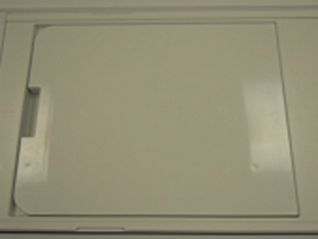
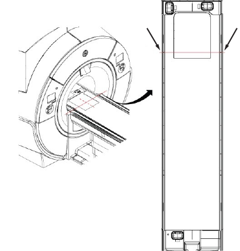
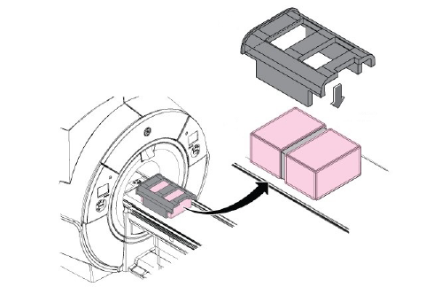
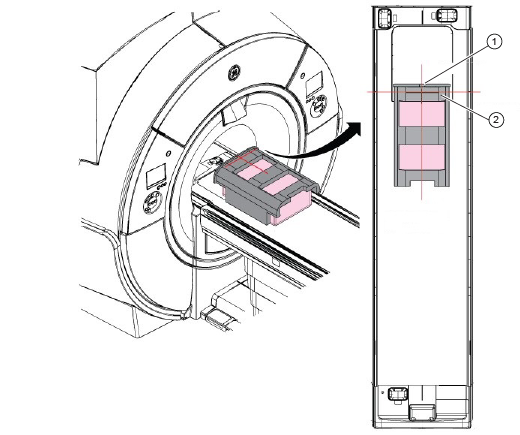
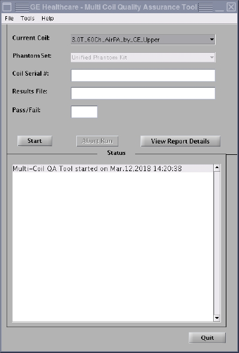

- Object ID: 00000018WIA30F12810GYZ
- Topic ID: id_2006310 Version: 6.2
- Date: Jul 28, 2025 6:33:03 PM
Setting up air posterior array (PA) - upper
Set up the upper air posterior array (PA) for the Multi-Coil Quality Assurance (MCQA) check.
Procedure
- Put the flat filler panel on the table.
Figure 1. Flat filler panel 
- Press the Alignment Light button.
- Move the cradle so the alignment light shows on the air PA coil upper end line on both sides of the cradle.Note There are lines on both sides of the cradle.
Figure 2. Upper end line light alignment 
- Do the following steps:
Notice Phantom spacer must be placed between two phantoms, otherwise the test will fail.- Place the two TL unified phantoms and the spacer on the table.
- Place PA phantom positioner over the two TL unified phantoms.
Figure 3. Phantom setup 
- Move the phantom with positioner so that alignment line and alignment dent of the positioner are aligned with the beams.
Figure 4. Phantom alignment 
Option Description 1 Alignment dent 2 Alignment line - Press Landmark and then press Advance to Scan.
- Run the MCQA check.Note Select 3.0T_60Ch_AirPA_by_GE_Upper (or equivalent platform option) in the Current Coil field.
Figure 5. MCQA tool menu 